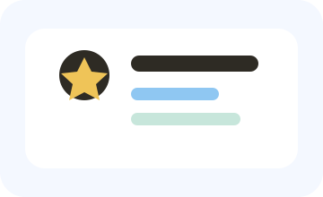
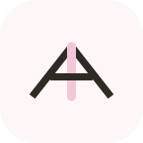
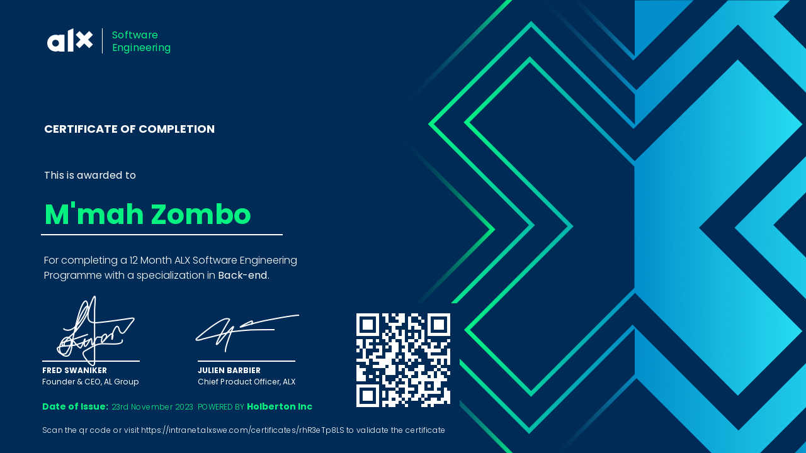
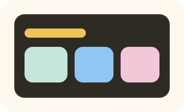
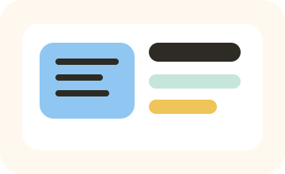
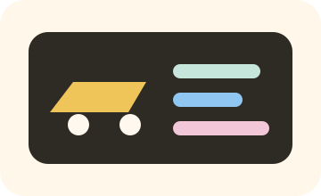
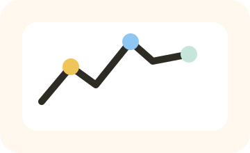
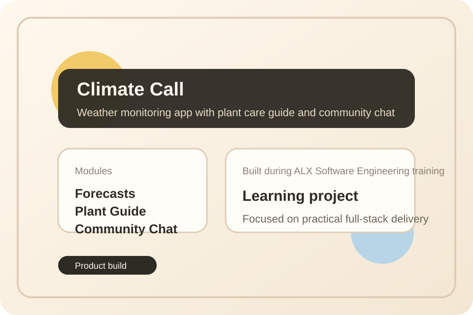

Award-winning software engineer in digital public infrastructure and fintech
I build national-scale products for public infrastructure and fintech.
I am M'mah Zombo, a product-minded software engineer building digital public infrastructure and fintech systems with thousands of users and more than $1 million in processed transactions.

Work experience
growing from frontend delivery into product and engineering leadership
At Korlie Limited, I progressed from frontend delivery to full-stack engineering—and now lead technical direction across government, fintech, and enterprise systems.
Frontend Developer
Korlie Limited · Shipped frontend for fintech, events, and digital services while building production-ready delivery skills.
- Shipped frontend for TenkiPay, Tikit, SportsZone, and client products.
- Led TenkiPay v2 launch with improved usability and product flow.
- Built frontend and supporting backend logic for core production systems.
Software Engineer
Korlie Limited · Full-stack engineer delivering digital public infrastructure and fintech used by thousands.
- Built major features across WanGov, GovPay, TenkiPay, and SportsZone.
- Built employee management and operations dashboards for 30+ government MDAs.
- Launched 2FA and a feedback system that strengthened platform trust.
Lead Software Engineer
Korlie Limited · Lead technical direction, architecture, and delivery across citizen- and enterprise-facing products.
- Lead 9 concurrent products; improved delivery speed by 80%.
- Own architecture for high-volume government, fintech, and enterprise systems.
- Cut incidents 60% through performance, reliability, and scalability improvements.
Core skills
built for complex products with real operational demands
My strongest work sits at the intersection of product engineering, system architecture, infrastructure thinking, and delivery leadership.
Software design and development
I build production systems end to end, shaping requirements into maintainable applications that work for real users, teams, and operations.
System analysis and architecture
I turn business requirements into workflows, technical decisions, and scalable architecture plans that support long-term product growth.

Distributed systems and API design
I design APIs, service boundaries, and backend patterns that support high-throughput products, integrations, and multi-team collaboration.
Technical leadership
I lead engineers through mentoring, architecture decisions, cross-functional planning, and dependable execution across concurrent products.
Performance, scalability, and reliability
I improve system performance and reduce operational risk by paying close attention to scalability, incident reduction, and production resilience.
Product and solution thinking
I stay product-minded, balancing user needs, public-service outcomes, and business goals when making engineering tradeoffs.
How I work
From idea to dependable execution
I work from requirement discovery to architecture, implementation, deployment, and iteration, with a focus on products that need to perform under real demand and public-facing pressure.
Why teams stay
Mentor testimonial
“M'Mah combines sharp engineering judgment with calm, dependable leadership. She brings structure to complex product problems, keeps teams aligned on practical delivery, and consistently raises the quality of both the software and the thinking around it.”
- Placeholder testimonial based on the leadership qualities reflected across her resume.
- Easy to replace with a real mentor quote and attribution later.
- Keeps the current section layout while aligning more closely with the actual profile.
Preferred engineering stacks
the ecosystems I build with
Modern full-stack and backend delivery
I choose stacks based on product needs, delivery speed, maintainability, and how well they support public infrastructure, fintech workflows, and long-term platform growth.
Programming languages, tools, and frameworks
the toolbox behind my delivery process
My day-to-day toolkit reflects the work in my resume: product engineering, backend systems, frontend delivery, infrastructure support, and collaborative execution.
Programming languages
Frameworks and platforms
Databases, cloud, and tools
Education, certifications, and recognition
credentials behind the work
My resume reflects a mix of academic training, formal professional education, and recognition for the systems and products I have helped build.
Enterprise Product Management Fundamentals
Microsoft · 2026
Training in product strategy, product delivery, stakeholder alignment, and enterprise product development.

Software Engineering Nanodegree
ALX Africa · 2022 - 2023
Specialized in backend engineering and full-stack development, including the Climate Call application.
Introduction to Artificial Intelligence
IBM · 2022
Covered machine learning, generative AI, natural language processing, and practical AI applications.
BSc Software Engineering
Limkokwing University · Expected 2027
Focused on software engineering, data structures and algorithms, databases, and system design.
National Female Innovator of the Year
Ministry of Communication, Technology and Innovation · 2025
National recognition for contributions to digital innovation through systems such as WanGov and GovPay.
Women in GovStack Challenge
GovStack · 2nd Runner-Up · 2026
Technical lead for an award-winning digital certificate retrieval, sharing, and verification solution built with DPI principles.
Selected projects
products, platforms, and systems I’ve built
These projects reflect the platforms, transaction systems, and public-service products highlighted across my resume.
Back to top
WanGovEnd-to-end digital public infrastructure platform supporting thousands of users and more than 30,000 government service applications across 30+ MDAs.
View projectDigitizes registration, payments, and certificate issuance workflows for all business entity types while improving processing speed and transparency.
View projectDigital payments and wallet platform connecting mobile money, banking, and payment services with more than $1 million in transaction volume.
View project
GovPayContributed to digital payment flows, product delivery, and platform improvements for public-service financial transactions and citizen-facing workflows.
View project
Enterprise Remittance PlatformArchitected and delivered a remittance platform supporting enterprise-scale money movement and transaction-heavy service workflows.
View projectEnterprise-grade attendance management for global teams — real-time check-ins, punctuality tracking, smart analytics, and multi-company workforce visibility.
View project
SportsZoneDelivered reservation features and broader product improvements for a sports and event-focused platform built for operational reliability.
View project
Climate CallA weather monitoring application with a plant care guide and community chat, built during my ALX software engineering training.
View projectMy blogs
where I share ideas, lessons, and technical thinking
I use my blogs to document what I am learning in engineering, reflect on delivery and leadership, and share ideas shaped by building public-service and fintech products.
Engineering systems, architecture, and software delivery
My technical blog is where I write about backend systems, software architecture, digital public infrastructure, and lessons from shipping production products.
- System design reflections and architecture breakdowns
- Engineering process lessons from real product delivery
- Notes from building fintech and government-facing systems
General thoughts on growth, technology, and building in context
My Medium blog is a broader writing space for ideas on growth, technology, leadership, product work, and the human side of building meaningful systems.
- Career reflections and leadership lessons
- Thoughts on innovation, technology, and impact
- Practical discussions beyond purely technical tutorials